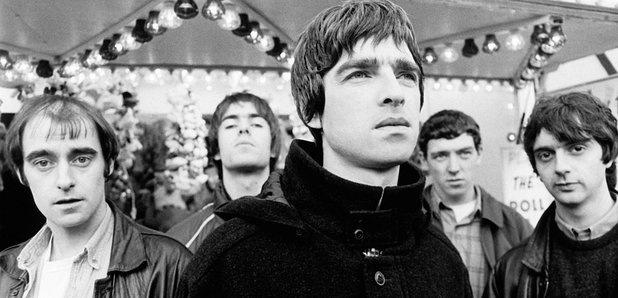

ORIGINS
ORIGINS
Oasis was recognised as one of the biggest bands in British music history. The band formed in Manchester 1991 and originally consisted of group members Liam Gallagher, Paul “Bonehead” Arthurs, Paul “Guigsy” McGuigan and Tony McCarroll. Liam’s older brother Noel then later joined the band to form Oasis.
Oasis did little gigs across the country to then be signed onto Creation Records by founder Alan McGee. They then went on to release their debut studio album Definitely Maybe, a year later they released their second album (What’s the Story) Morning Glory which sold 22 million copies. After the release of their second album a huge battle of the bands occurred between Oasis and Blur which is regarded as one of the biggest movements in brit pop history.
In 1996 Oasis would go on to play two nights at Knebworth for an audience of 125,000 people each night which at the time was the largest outdoor gig in UK history. 2.5 million people attempted to apply for tickets to attend the Knebworth gig, which is still the highest demand for a show in British history.
